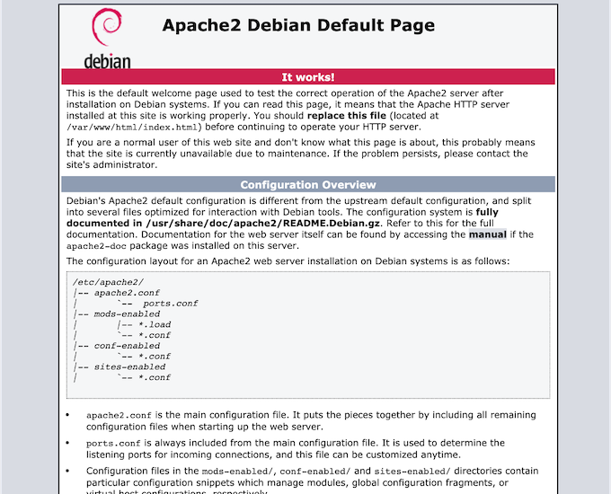

Virtuellen Server einrichten¶
Wir wollen erläutern, wie Sie sich einen Virtuellen Server einrichten können. Einen solchen Server erhalten Sie auf Antrag bei den Laboringenieuren in der 6. Etage des C-Gebäudes. Wir beschreiben hier die Einrichtung eines solchen Servers, der hier die IP 141.45.146.63 und den Namen fiwprojekte.f4.htw-berlin.de hat. Nach Einrichtung durch die Laboringenieure hat ein solcher Server zwei User: local und root. Sie können sich aber weder per ssh noch per sftp als root auf dem Server einloggen.
Warning
Zum Einloggen auf den Server außerhalb des HTW-Netzwerkes benötigen Sie außerdem eine VPN-Verbindung (siehe hier).
Einloggen per ssh¶
Sie können sich nur als local einloggen. Geben Sie dazu im Terminal
oder
und auf Nachfrage das Passwort des Users local ein. Um nun root-Rechte zu erlangen, geben Sie su - (super user - Minus nicht vergessen!) und das Passwort für root ein.
Sie sind nun als root auf dem Server eingeloggt.
Einloggen mithilfe eines Zertifikates¶
Um zu vermeiden, dass Sie immer das Passwort beim Login angeben müssen, erstellen Sie sich am besten ein Zertifikat und spielen dieses auf den Server.
Unter MacOS (und Linux)¶
Auf einem Mac geht das (hier am Beispiel des Servers fiwprojekte - bei Ihnen natürlich anders) wie folgt:
-
Schlüsselpaar auf dem Mac erstellen
Öffnen Sie das Terminal generieren dort mithilfe von
ein Schlüsselpaar.
- Bestätigen Sie den standardmäßigen Speicherort (
~/.ssh/id_ed25519) mit Enter. - Geben Sie optional eine Passphrase ein oder drücke zweimal Enter für einen schlüssellosen Zugriff (Letzteres ist einfacher, aber unsicherer).
- Bestätigen Sie den standardmäßigen Speicherort (
-
Öffentlichen Schlüssel auf den Debian-Server übertragen
Verwenden Sie das integrierte Tool
ssh-copy-id, um den öffentlichen Schlüssel direkt in die Datei~/.ssh/authorized_keysauf dem Server einzufügen:Geben Sie bei der Abfrage das aktuelle Passwort des Nutzers
localauf dem HTW-Server ein.Für den Fall, dass
ssh-copy-idfehlschlägt, müssen Sie den Schlüssel wie folgt manuell übertragen: -
Verbindung per SSH testen
Der Server sollte Sie nun direkt (bzw. nach Eingabe deiner Schlüssel-Passphrase) ohne Server-Passwort einloggen:
-
Bequemer Shortcut via SSH-Config (Optional!)
Fügen Sie in der Datei
~/.ssh/configauf dem Mac folgenden Block ein (z.B. mit vi oder nano im Terminal):Damit genügt fortan der Befehl
ssh fiwim Terminal.
Unter Windows¶
Unter Windows ist das Vorgehen in der PowerShell fast identisch:
-
SSH-Schlüsselpaar in PowerShell erstellen
Öffnen Sie die PowerShell (oder Windows Terminal) und führen Sie folgenden Befehl aus:
- Bestätigen Sie den Speicherort (
C:\Users\<DeinName>\.ssh\id_ed25519) mit Enter. - Vergeben Sie eine sichere Passphrase oder drücken zweimal Enter für keine.
- Bestätigen Sie den Speicherort (
-
Öffentlichen Schlüssel auf den Debian-Server übertragen
In der Windows PowerShell lesen Sie den Schlüsselinhalt aus und hängen ihn direkt an die
authorized_keysauf dem Server an:Get-Content $HOME\.ssh\id_ed25519.pub | ssh local@fiwprojekte.f4.htw-berlin.de "mkdir -p ~/.ssh && chmod 700 ~/.ssh && cat >> ~/.ssh/authorized_keys && chmod 600 ~/.ssh/authorized_keys"Geben Sie einmalig das Passwort des Nutzers
localauf dem Server ein. -
Windows SSH-Agent aktivieren und Passphrase speichern (erfordert Administrator-Rechte für Schritt 1.)
Damit Windows deine Passphrase dauerhaft speichert, aktivieren Sie den Windows-Dienst:
-
Öffnen Sie die PowerShell als Administrator und starte den Dienst dauerhaft:
-
Wechseln Sie zurück in die "normale" PowerShell (oder Sie bleiben im Fenster als Admin) und hinterlegen den Schlüssel:
-
Geben Sie nun Ihre Passphrase ein. Sie wird nun vom Windows-Systemdienst verwaltet und muss nicht erneut eingetippt werden.
-
-
Verbindung testen
Loggen Sie sich ohne Passworteingabe auf dem Server ein:
-
SSH-Config unter Windows anlegen (Optional!)
Erstellen Sie die Datei
configim Ordner.ssh(z.B. vianotepad $HOME\.ssh\config):Danach reicht auch unter Windows einfach der Befehl
ssh fiw.
Systeminformationen¶
Probieren Sie ein paar Befehle aus, um Informationen über das Sytem zu ermitteln. Zunächst Details über das Betriebssystem:
root@fiwprojekte# hostnamectl
Static hostname: fiwprojekte
Icon name: computer-vm
Chassis: vm 🖴
Machine ID: 00e8594aff574f13a461ebeabc2e0231
Boot ID: eaf47cb1b0e647c683ada5eb4bb355c1
Product UUID: 8f804060-6f4f-4f5e-b6f0-b2343befbe8b
Virtualization: xen
Operating System: Debian GNU/Linux 13 (trixie)
Kernel: Linux 6.12.107+deb13-amd64
Architecture: x86-64
Und so fragen Sie laufende Prozesse ab:
Liste aller Nutzer (less mit qbeenden):
Liste aller Gruppen:
Die Firewall anpassen¶
Das Anpassen der Firewall erfolgt über das Skript nftables.conf aus dem root-Verzeichnis:
root@gaw:~# ls -la
# gekürzt #
-rwxr-xr-x 1 root root 136 2. Mär 16:22 firewall-disable.sh
-rwxr-xr-x 1 root root 354 2. Mär 16:40 firewall.sh
-rw-rw-r-- 1 root root 2068 4. Jun 10:08 nftables.conf
# gekürzt #
Das sind die 3 Skripte, die für die Firewall relevant sind. Mithilfe von
können Sie die Firewall vollständig außer Kraft setzen (bleibt aber trotzdem alles im HTW-Netzwerk). Dieses Skript sollten Sie nur selten und dann immer nur kurzfristig ausführen. Wir werden es beim Anlegen der Zertifikate für https einmal kurz verwenden.
Danach schnell immer wieder
ausführen. Dieses Skript liest die nftables.conf. Darin gibt es bspw. Zeilen, wie
# SSH aus dem HTW-Netz
ip saddr {141.45.0.0/16, 10.4.0.0/16} tcp dport 22 counter packets 0 bytes 0 accept
# HTTPS - aus dem HTW-Netz für apache2
ip saddr {141.45.0.0/16, 10.4.0.0/16} tcp dport {80, 443} counter packets 0 bytes 0 accept
Diese Zeilen legen fest, dass die Ports 22 (sftp), 80 (http) und 443 (https) sowohl für den Eingang (chain input) als auch für den Ausgang (chain OUTPUT) nur aus dem HTW-Netz verfügbar sind.
Wenn Sie diese Ports öffnen wollen (sinnvoll für 80 und 443), dann ändern Sie die Zeile zu
, entfernen als die Einschränkung ip saddr {141.45.0.0/16, 10.4.0.0/16}. Das machen Sie sowohl für input als auch für OUTPUT.
Siehe auch z.B. hier.
Installationen¶
Wir wollen im folgenden ein System aus
- Apache Webserver und
- PostgreSQL
erstellen und installieren dafür nun die entsprechenden Komponenten. Vor jeder Neuinstallation geben wir zunächst (als root)
Wir müssen uns auch nicht zwingend als root einloggen, sondern stattdessen vor jeden Befehl sudo einfügen. Um sudo zu installieren, führen sie einmalig als root
aus.
Apcahe Webserver¶
Um den Apache Webserver zu installieren, geben wir
ein und drücken bei Nachfragen einfach Enter. Nach der Installation können Sie den Status des Webservers abfragen:
root@fiwprojekte:~# systemctl status apache2
* apache2.service - The Apache HTTP Server
Loaded: loaded (/usr/lib/systemd/system/apache2.service; enabled; preset: enabled)
Active: active (running) since Mon 2026-08-31 07:29:50 UTC; 1h 48min ago
Invocation: 4a73e6315ceb47a6ae138400f21b1eee
Docs: https://httpd.apache.org/docs/2.4/
Main PID: 654 (apache2)
Tasks: 55 (limit: 1106)
Memory: 25M (peak: 26.3M)
CPU: 972ms
CGroup: /system.slice/apache2.service
|-654 /usr/sbin/apache2 -k start
|-663 /usr/sbin/apache2 -k start
`-670 /usr/sbin/apache2 -k start
Aug 31 07:29:49 fiwprojekte systemd[1]: Starting apache2.service - The Apache HTTP Server...
Aug 31 07:29:50 fiwprojekte systemd[1]: Started apache2.service - The Apache HTTP Server.
und auch die URL http://fiwprojekte.f4.htw-berlin.de/ in den Browser eingeben. Es erscheint:

Falls Sie den Webserver neu starten wollen/müssen, geben Sie einfach
ein. Sollte es Probleme mit dem Webserver geben, schauen Sie sich die *.log-Dateien unter /var/log/apache2 an:
root@fiwprojekte:/var/log/apache2# ls -la
total 932
drwxr-x--- 2 root adm 4096 Aug 31 00:00 .
drwxr-xr-x 10 root root 4096 Aug 31 08:55 ..
-rw-r----- 1 root adm 62066 Aug 31 09:12 access.log
-rw-r----- 1 root adm 1608 Aug 31 07:29 error.log
-rw-r----- 1 root adm 0 Dec 6 2022 other_vhosts_access.log
https mit Certbot einrichten¶
Für die Installation der Zertifikate gehen Sie am besten, wie in certbot beschrieben, vor (Webseite läuft auf Apache, Linux (snap)). Wichtig ist, dass die Ports 80 und 443, wie oben beschrieben` freigeschaltet sind.
-
System aktualisieren und Webserver-Plugin wählen
2. SSL-Zertifikat anfordern und HTTPS einrichtenSollte dieser Befhl bei Ihnen fehlschlagen (Zeitüberschreitung), dann schalten Sie kurfristig die Firewall aus (
~/fiewall-diable.sh), führen den Befehl erneut aus und schalten dann die Firewall wieder ein (~/firewall.sh).Die Zertifikate liegen anschließend unter
/etc/letsencrypt/live/fiwprojekte.f4.htw-berlin.de/.
PostgreSQL installieren¶
-
System aktualisieren
-
PostgreSQL und Zusatzpakete installieren
-
Dienst aktivieren und Status prüfen
-
Benutzer und Datenbank anlegen
Wechseln Sie zum Standardbenutzer
postgres, erstellen Sie einen eigenen Anwendungsbenutzer (hiermein_nutzer) und eine dazugehörige Datenbank (hiermein_projekt):# In die PostgreSQL-Kommandozeile wechseln sudo -u postgres psql # Benutzer und Datenbank in psql erstellen (Passwort anpassen): CREATE USER mein_nutzer WITH PASSWORD 'sicheres_passwort'; CREATE DATABASE mein_projekt OWNER mein_nutzer; GRANT ALL PRIVILEGES ON DATABASE mein_projekt TO mein_nutzer; # psql verlassen \q
git¶
Damit Sie Ihr Repository / Ihre Repositories auch auf den virtuellen Server "pullen" können, benötigen Sie noch git. Die Installation ist einfach:
Beantworten Sie eventuelle Fragen einfach mit Enter. Testen Sie, ob die Installation erfolgreich war:
Es sollte etwas wie git version 2.47.3 ausgegeben werden.
Verwendung von git¶
Sie müssen nun Ihr Remote Rpository (die entsprechende URL erhalten Sie bei GitHub oder GitLab oder welchen git-Host Sie auch verwenden) genau ein Mal clonen (git clone RemoteRepositoryCloneURL).
Die Wahl des Verzeichnisses, in das Sie clonen, hängt primär davon ab, wo gebaut wird (direkt auf dem Server via Git-Clone vs. über eine CI/CD-Pipeline) und wie sauber der Linux Filesystem Hierarchy Standard (FHS) eingehalten werden soll.
Für ein Produktions-Setup auf Debian sind folgende Pfadstrukturen üblich und bewährt:
-
Empfohlene Zielordner für die fertigen (deployten) Anwendungen (Runtime)
Unabhängig davon, wo der Quellcode liegt, sollten die lauffähigen Artefakte an dedizierten Orten liegen:
-
Frontend (Angular Build-Output
dist/):Das ist das Standard-Verzeichnis für Webserver (Nginx/Apache) und ist optimiert für Berechtigungen (
www-data) und statisches Ausliefern. -
Backend (Spring Boot JAR):
/optist laut FHS für eigenständige Softwarepakete vorgesehen. Der Spring-Boot-Dienst läuft idealerweise unter einem dedizierten Service-User (z. B.appuser) via systemd.
-
-
Empfohlene Zielordner für die Git-Repositories (Quellcode)
Das ist abhängig davon, wie der Deployment-Workflow aussieht. Es gibt zwei Varianten:
-
Variante A: Wir führen das Build selbst auf dem Server aus ( jeweils
git pullund dannmvn buildundng build). Dann legen wir die Repos unter/optab (unter/srvginge auch)/opt/<app-name>/ ├── source/ │ ├── backend/ (Git Repo Spring Boot) │ └── frontend/ (Git Repo Angular) └── release/ ├── backend/ (JAR-Datei für systemd) └── frontend/ (dist-Dateien für Webserver-Root)Sollten Sie ein gemeinsames Repository für Front- und Backend haben, dann wäre hier
/opt/sourceIhr Repository. -
Variante B: Das Deployment erfolgt per GitHub Actions
-
Nachdem Sie einmal geclont haben, müssen Sie stets nur noch innerhalb des projekte-Ordners (cd /var/www/html/projekte) aufrufen:
, um sich die neueste Version Ihres Repositories auf den virtuellen Server zu ziehen.